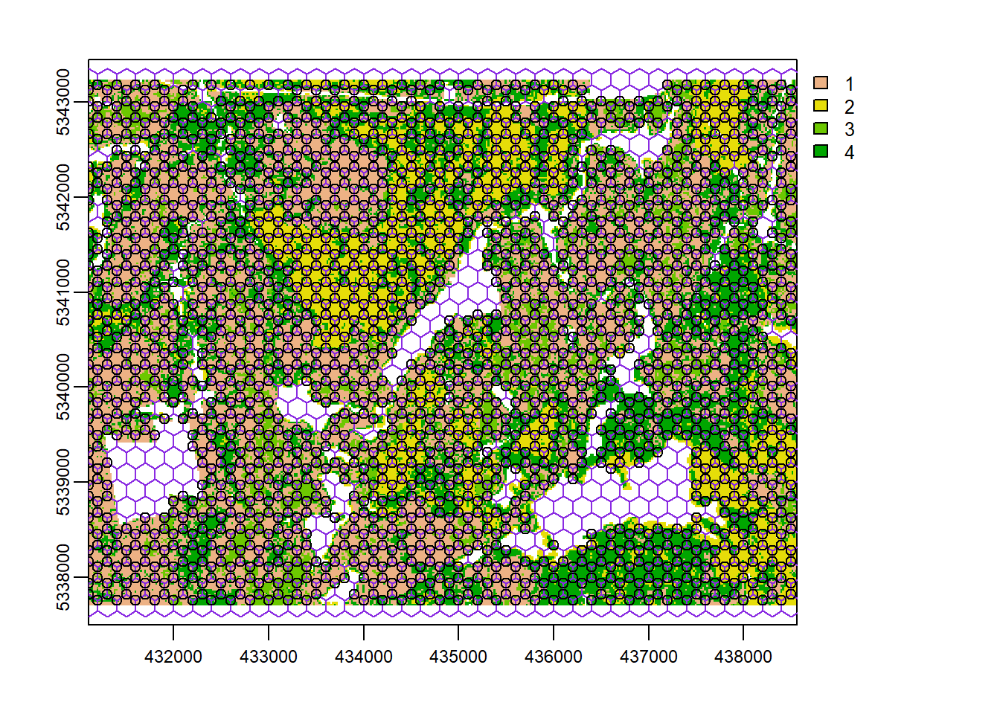
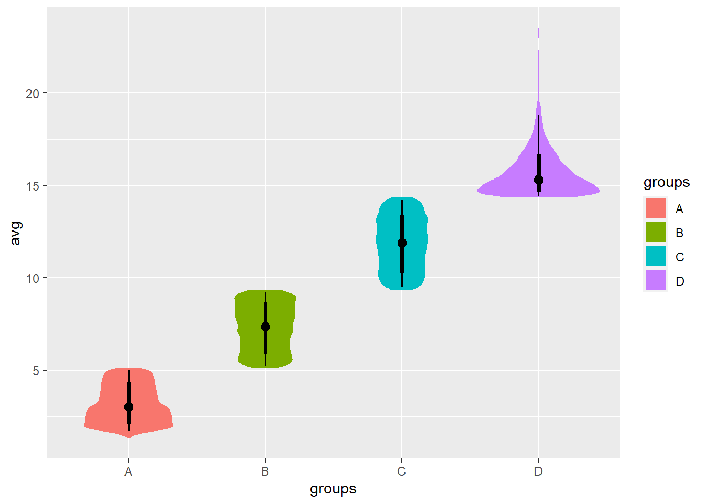
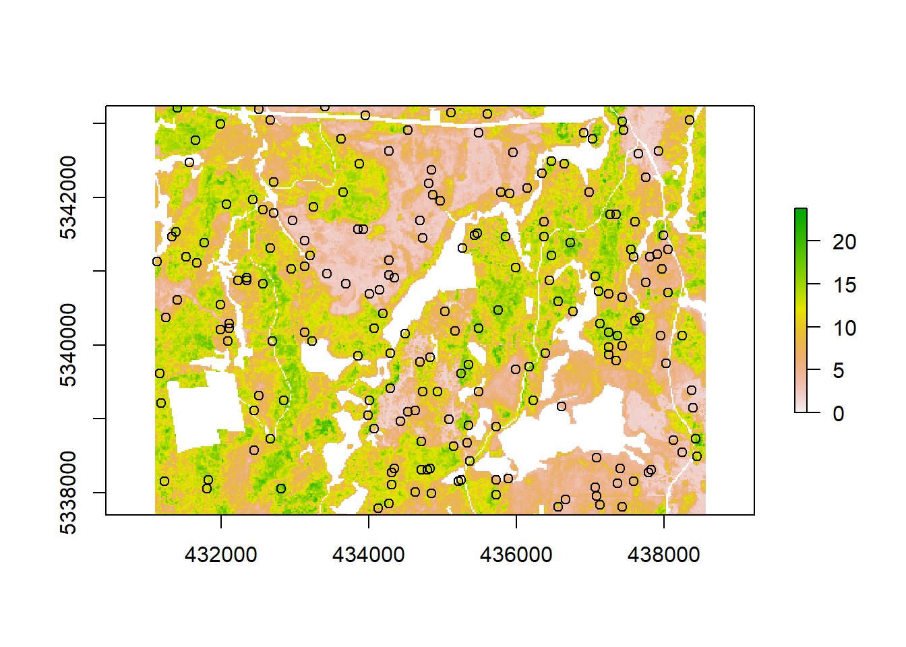
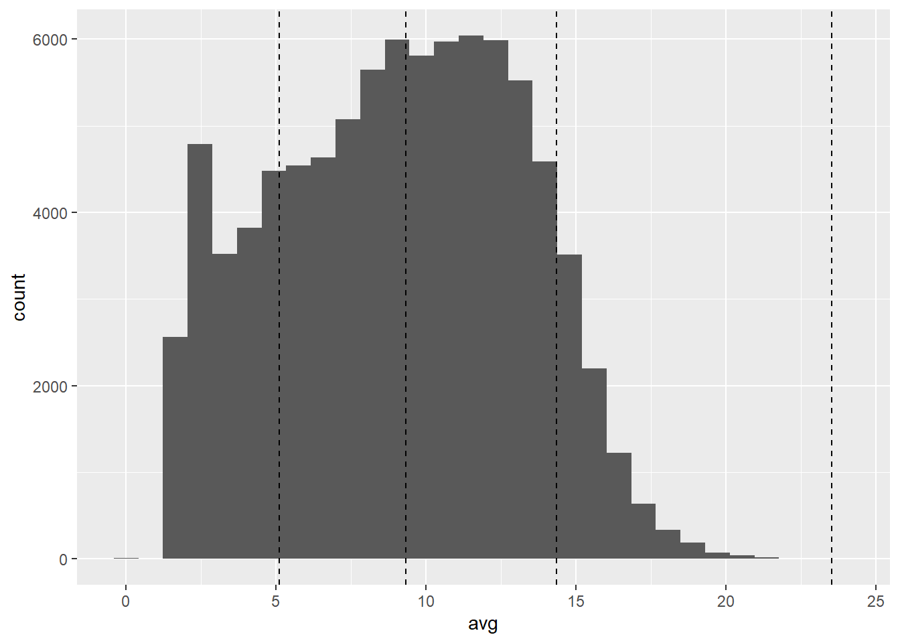
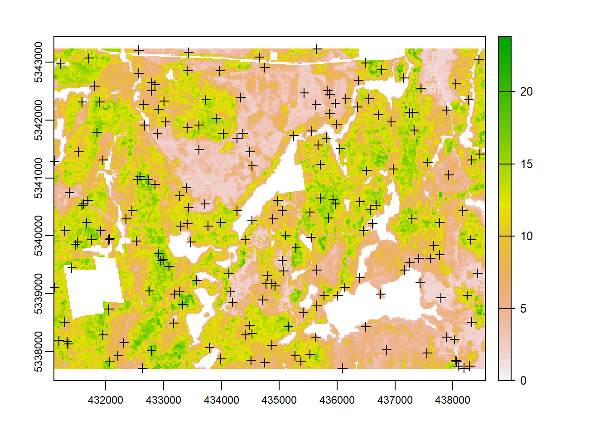
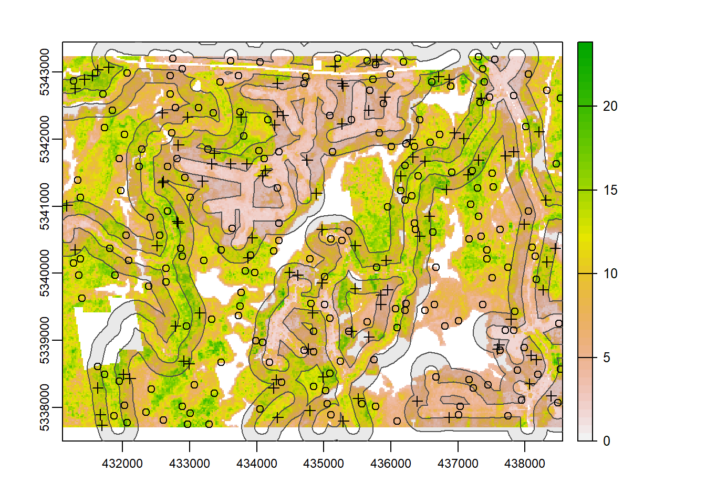
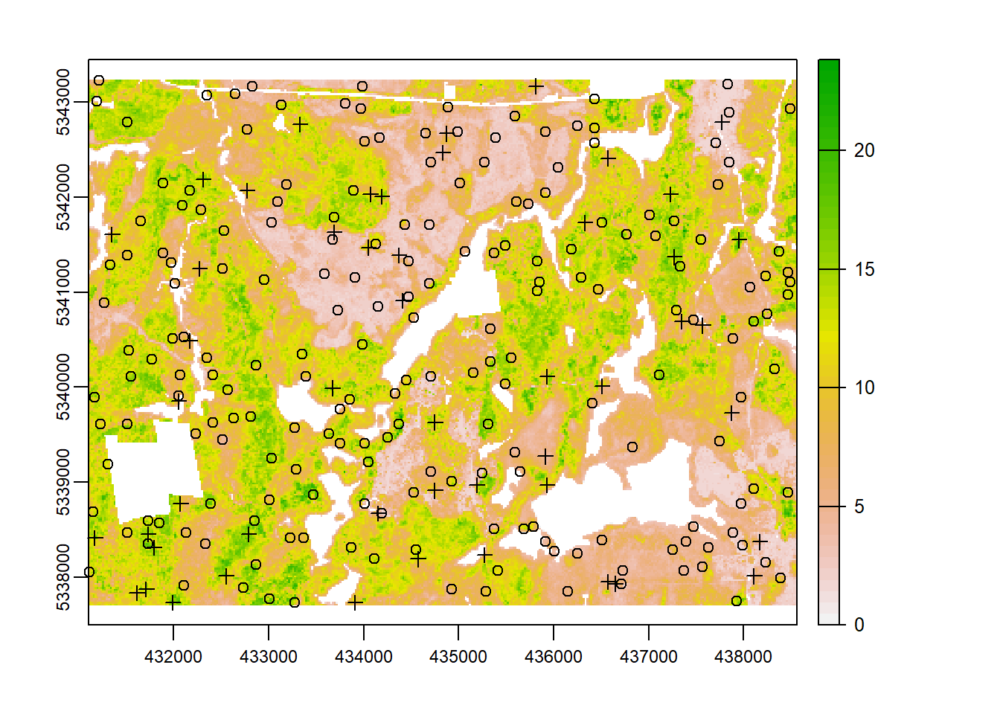
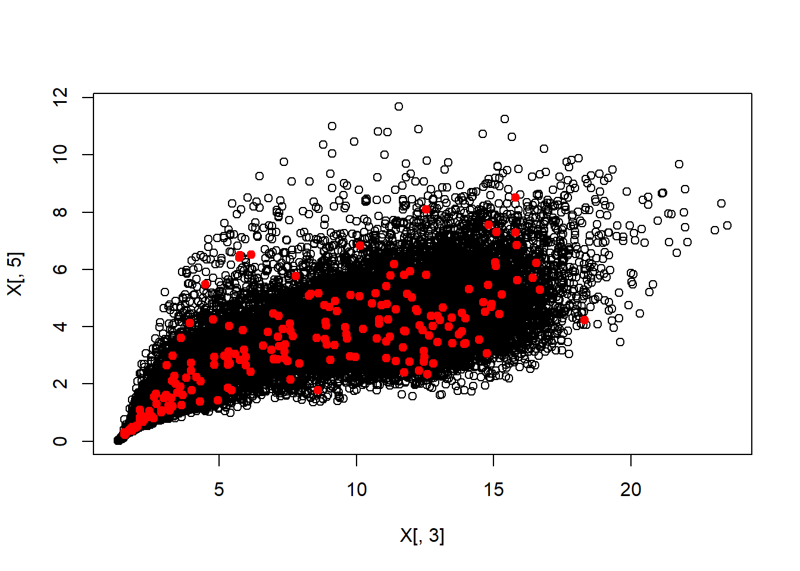
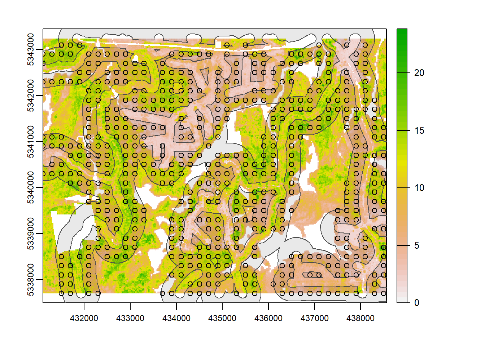
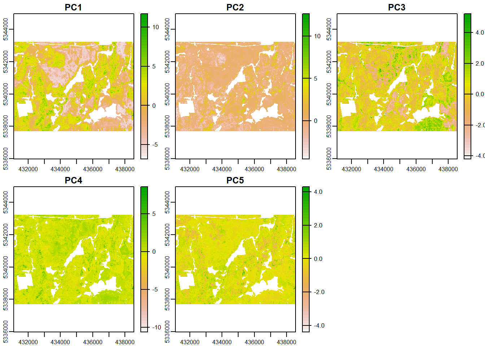

Other stratification methods
The second method we outline is using k means stratification for consequent stratified sampling.
K-means
Here is a standard way to apply unsupervised K-means and allocate each ALS cell to a cluster.
### K MEANS ###
set.seed(123)
# Extract values for Kmeans
v <- rast_dt_wall
## determine index of each cell so to map values correctly without NA's
idx <- 1:ncell(wall_poly)
idx <- idx[-unique(which(is.na(v), arr.ind=TRUE)[,1])]
############################
#### K MEANS CLUSTERING ####
############################
#### DETERMINE OPTIMAL NUMBER OF CLUSTERS?????
#Apply K means - center and scale values and remove NA's
E <- kmeans(na.omit(scale(v,center = T,scale=T)), 4)
clusters <- E$cluster
# create empty raster from original candidate dimentions
r.empty <- wall_poly[[1]]
r.empty[] <- NA
# add cluster values to corresponding index and re-name
r.empty[idx] <- clusters
names(r.empty) <- c("clusters")
#combine clusters with original structural metrics
wall_poly[[14]] <- r.empty
pal <- brewer.pal(n = 4, name = "Spectral")
plot(wall_poly$clusters,col=pal)
How many clusters?
This is a loaded questions. How many clusters to choose can depends on many reasons, and there are many ways to determine how many to use. A challenge with the K-means method is being objective about the number of strata to use and where to partition the data. I present a number of examples below. (Papa et al. 2020) used k-means clustering and outlined that they used the Elbow method to determine the number of clusters.
#Elbow Method for finding the optimal number of clusters
set.seed(123)
# data <- as.data.frame(na.omit(scale(v)))
# Elbow method
fviz_nbclust(as.data.frame(na.omit(scale(v))), kmeans, method = "wss") +
geom_vline(xintercept = 4, linetype = 2) + # add line for better visualisation
labs(subtitle = "Elbow method") # add subtitle
Based on the figure above we see that we can choose 4 clusters based on the elbow method. There are many methods that can be used. We see quickly that its not entirely cut and dry how to choose cluster numbers, but we have methods to decide that. This is likely something that the user will need to give input on.
The NbClust() function from the (Charrad et al. 2015) package is an additional method, though it takes a long time to run (especially on large datasets). This function:
provides 30 indices for determining the number of clusters and proposes to user the best clustering scheme from the different results obtained by varying all combinations of number of clusters, distance measures, and clustering methods.
nb <- NbClust(data, diss=NULL, distance = "euclidean",
min.nc=2, max.nc=12, method = "kmeans",
index = "all", alphaBeale = 0.1)Optimum stratum boundaries
A method to address this is using optimal break methods like that of strata.data() from the (Reddy and Khan 2019) package. This method takes the population of candidate cells v and a fixed sample size 100 to compute the optimum stratum boundaries (OSB) for a given number of strata. Along with OSB it also provides the optimum sample sizes within strata directly from the data.
In this example we specify that we would like data to be split into 4 strata and we iterate splits on the avg cov and p99 variables. Some studies like (Maltamo et al. 2011) and (Hawbaker et al. 2009) used multiple metrics to split on, while others like used only 1.
#prepare data
o_val <- v %>%
na.omit() %>%
as.data.frame()##########################################
####### OPTIMAL CLUSTERING BREAKS ########
##########################################
##### Sampling within clusters
OSB <- list()
for(i in c(1,2,10)){
#1 - average height
#2 - covariance
#10 - p99 height
res <- strata.data(o_val[,i], h = 4, n=100)
k <- names(o_val[1])
breaks <- data.frame(res$OSB)
colnames(breaks)=k
OSB[[i]] <- breaks
}
breaks <- cbind(as.data.frame(OSB[[1]]),as.data.frame(OSB[[2]]),as.data.frame(OSB[[10]]))
names(breaks) <- c("avg","cov","p99")
saveRDS(breaks,"dat/breaks.RDS")ggplot(o_val,aes(avg))+
geom_histogram()+
geom_vline(xintercept = breaks$avg, linetype = "dashed")
Sampling within groups/strata
Once OSB are defined we can associate the groups with the data themselves and perform statistical tests to determine wherther groups are significantly difference from one another. (Papa et al. 2020) used ANOVA and Tukey post-hoc tests. First, we can change the resulting group labels from cut() to more understandable characters.
#define groups within splitting variable
split_osb <- c(-Inf,breaks$avg[1:3],Inf)
grps <- cut(o_val$avg,split_osb)
o_val$groups <- as.factor(grps)
#convert groups to A | B | C | D
o_val <- o_val %>% mutate(groups = case_when(groups == "(-Inf,5.1]"~"A",
groups == "(5.1,9.33]"~"B",
groups == "(9.33,14.4]"~"C",
groups == "(14.4, Inf]"~"D"))
# Statistical testing
summary(mod1 <- aov(avg~groups,data=o_val))## Df Sum Sq Mean Sq F value Pr(>F)
## groups 3 1290629 430210 266539 <2e-16 ***
## Residuals 87230 140794 2
## ---
## Signif. codes: 0 '***' 0.001 '**' 0.01 '*' 0.05 '.' 0.1 ' ' 1o_val %>%
ggplot(aes(groups,avg,fill=groups)) +
stat_eye()
Once these strata are established we can begin to test a variety of sampling mechanisms.
Simple Random Sampling
## Without road masking
ns <- 200 #total number of desired samples
samples <- o_val %>%
group_by(groups) %>%
summarize(n= n()) %>%
mutate(freq = n / sum(n), plot_tot = as.integer(freq*ns))
df_sample <- o_val %>%
group_by(groups) %>%
arrange(groups) %>%
nest() %>%
ungroup() %>%
mutate(n = samples$plot_tot) %>%
mutate(samp = map2(data, n, sample_n)) %>%
dplyr::select(-data) %>%
unnest(samp)
# sample summary statistics
df_sample %>% group_by(groups) %>% dplyr::select(avg,groups) %>% summarise(
n = n(),
mean = mean(avg),
sd = sd(avg)
)## # A tibble: 4 x 4
## groups n mean sd
## <chr> <int> <dbl> <dbl>
## 1 A 41 3.34 1.00
## 2 B 60 7.20 1.12
## 3 C 79 11.7 1.39
## 4 D 18 15.9 0.883#population summary statistics
o_val %>% group_by(groups) %>%
dplyr::select(avg,groups) %>%
summarise(
n = n(),
mean = mean(avg),
sd = sd(avg)
)## # A tibble: 4 x 4
## groups n mean sd
## <chr> <int> <dbl> <dbl>
## 1 A 17933 3.30 1.05
## 2 B 26395 7.36 1.23
## 3 C 34626 11.8 1.41
## 4 D 8280 15.7 1.23coords <- st_as_sf(df_sample, coords = c("x","y"))
plot(wall_poly$avg)
plot(st_geometry(coords),add=T)
ggplot(mapping = aes(x=avg,y=std))+
geom_point(data = o_val, aes(color = groups))+
geom_point(data = df_sample, pch=21, fill = "red",colour="black")+
theme_bw() +
ylim(0,15) +
coord_equal() +
theme(panel.grid = element_blank(),
legend.position = "right")
## Df Sum Sq Mean Sq F value Pr(>F)
## groups 3 532594 177531 117528 <2e-16 ***
## Residuals 29898 45162 2
## ---
## Signif. codes: 0 '***' 0.001 '**' 0.01 '*' 0.05 '.' 0.1 ' ' 1 ### SRS Road Masked {-}
ns <- 200 #total number of desired samples
samples <- o_val %>%
group_by(groups) %>%
summarize(n= n()) %>%
mutate(freq = n / sum(n), plot_tot = as.integer(freq*ns))
df_sample <- o_val %>%
group_by(groups) %>%
arrange(groups) %>%
nest() %>%
ungroup() %>%
mutate(n = samples$plot_tot) %>%
mutate(samp = map2(data, n, sample_n)) %>%
dplyr::select(-data) %>%
unnest(samp)
# sample summary statistics
df_sample %>% group_by(groups) %>% dplyr::select(avg,groups) %>% summarise(
n = n(),
mean = mean(avg),
sd = sd(avg)
)## # A tibble: 4 x 4
## groups n mean sd
## <chr> <int> <dbl> <dbl>
## 1 A 61 2.88 0.875
## 2 B 50 6.96 1.20
## 3 C 69 11.8 1.44
## 4 D 18 15.6 0.961#population summary statistics
o_val %>% group_by(groups) %>%
dplyr::select(avg,groups) %>%
summarise(
n = n(),
mean = mean(avg),
sd = sd(avg)
)## # A tibble: 4 x 4
## groups n mean sd
## <chr> <int> <dbl> <dbl>
## 1 A 9126 3.15 0.992
## 2 B 7590 7.29 1.23
## 3 C 10404 11.9 1.41
## 4 D 2782 15.7 1.21Visualizing the samples
coords <- st_as_sf(df_sample, coords = c("x","y"))
plot(wall_poly_roads$avg)
plot(st_geometry(coords),add=T)
ggplot(mapping = aes(x=avg,y=std))+
geom_point(data = o_val, aes(color = groups))+
geom_point(data = df_sample, pch=21, fill = "red",colour="black")+
theme_bw() +
ylim(0,15) +
coord_equal() +
theme(panel.grid = element_blank(),
legend.position = "right")
Using 2 variables to stratify
## Without road masking
# Extract values for Kmeans
v <- rast_dt_wall
o_val <- v %>%
na.omit() %>%
as.data.frame()
#define groups within splitting variable
split_osb <- c(-Inf,breaks$avg[1:3],Inf)
grps <- cut(o_val$avg,split_osb)
o_val$groups <- as.character(grps)
#convert groups to A | B | C | D
o_val <- o_val %>% mutate(groups = case_when(groups == "(-Inf,5.1]"~1,
groups == "(5.1,9.33]"~2,
groups == "(9.33,14.4]"~3,
groups == "(14.4, Inf]"~4))
o_val <- o_val %>%
group_by(groups) %>%
mutate(groups2 = ntile(std,3)) %>%
unite("groups_m",groups,groups2) %>%
mutate(id = group_indices(., groups_m))
ns <- 200 #total number of desired samples
samples <- o_val %>%
group_by(groups_m) %>%
summarize(n= n()) %>%
mutate(freq = n / sum(n),plot_tot = as.integer(freq*ns))
samp <- o_val %>%
group_by(groups_m) %>%
arrange(groups_m) %>%
nest() %>%
ungroup() %>%
mutate(n = samples$plot_tot) %>%
mutate(samp = map2(data, n, sample_n)) %>%
dplyr::select(-data) %>%
unnest(samp)
coords <- st_as_sf(samp, coords = c("x","y"))
plot(wall_poly$avg)
plot(st_geometry(coords),add=T)
p <- ggplot(mapping = aes(x=avg,y=std))+
geom_point(data = o_val, aes(color = groups_m))+
geom_point(data = samp, pch=21, fill = "red",colour="black")+
theme_bw() +
coord_equal() +
theme(panel.grid = element_blank(),
legend.position = "right")
coordsgrps <- o_val %>%
group_by(groups_m) %>%
arrange(groups_m) %>%
nest() %>%
ungroup()
p + geom_rect(data=coordsgrps$data[[1]],aes(xmin=min(avg),xmax=max(avg),ymin=min(std),ymax=max(std)),colour="black",fill=NA)+
geom_rect(data=coordsgrps$data[[2]],aes(xmin=min(avg),xmax=max(avg),ymin=min(std),ymax=max(std)),colour="black",fill=NA)+
geom_rect(data=coordsgrps$data[[3]],aes(xmin=min(avg),xmax=max(avg),ymin=min(std),ymax=max(std)),colour="black",fill=NA)+
geom_rect(data=coordsgrps$data[[4]],aes(xmin=min(avg),xmax=max(avg),ymin=min(std),ymax=max(std)),colour="black",fill=NA)+
geom_rect(data=coordsgrps$data[[5]],aes(xmin=min(avg),xmax=max(avg),ymin=min(std),ymax=max(std)),colour="black",fill=NA)+
geom_rect(data=coordsgrps$data[[6]],aes(xmin=min(avg),xmax=max(avg),ymin=min(std),ymax=max(std)),colour="black",fill=NA)+
geom_rect(data=coordsgrps$data[[7]],aes(xmin=min(avg),xmax=max(avg),ymin=min(std),ymax=max(std)),colour="black",fill=NA)+
geom_rect(data=coordsgrps$data[[8]],aes(xmin=min(avg),xmax=max(avg),ymin=min(std),ymax=max(std)),colour="black",fill=NA)+
geom_rect(data=coordsgrps$data[[9]],aes(xmin=min(avg),xmax=max(avg),ymin=min(std),ymax=max(std)),colour="black",fill=NA)+
geom_rect(data=coordsgrps$data[[10]],aes(xmin=min(avg),xmax=max(avg),ymin=min(std),ymax=max(std)),colour="black",fill=NA)+
geom_rect(data=coordsgrps$data[[11]],aes(xmin=min(avg),xmax=max(avg),ymin=min(std),ymax=max(std)),colour="black",fill=NA)+
geom_rect(data=coordsgrps$data[[12]],aes(xmin=min(avg),xmax=max(avg),ymin=min(std),ymax=max(std)),colour="black",fill=NA)
2 Variable Road Masked
## With road masking
# Extract values for Kmeans
v <- rast_dt
o_val <- v %>%
na.omit() %>%
as.data.frame()
#define groups within splitting variable
split_osb <- c(-Inf,breaks$avg[1:3],Inf)
grps <- cut(o_val$avg,split_osb)
o_val$groups <- as.character(grps)
#convert groups to A | B | C | D
o_val <- o_val %>% mutate(groups = case_when(groups == "(-Inf,5.1]"~1,
groups == "(5.1,9.33]"~2,
groups == "(9.33,14.4]"~3,
groups == "(14.4, Inf]"~4))
o_val <- o_val %>%
group_by(groups) %>%
mutate(groups2 = ntile(std,3)) %>%
unite("groups_m",groups,groups2) %>%
mutate(id = group_indices(., groups_m))
ns <- 200 #total number of desired samples
samples <- o_val %>%
group_by(groups_m) %>%
summarize(n= n()) %>%
mutate(freq = n / sum(n),plot_tot = as.integer(freq*ns))
samp <- o_val %>%
group_by(groups_m) %>%
arrange(groups_m) %>%
nest() %>%
ungroup() %>%
mutate(n = samples$plot_tot) %>%
mutate(samp = map2(data, n, sample_n)) %>%
dplyr::select(-data) %>%
unnest(samp)
coords <- st_as_sf(samp, coords = c("x","y"))
plot(wall_poly_roads$avg)
plot(st_geometry(coords),add=T)
p <- ggplot(mapping = aes(x=avg,y=std))+
geom_point(data = o_val, aes(color = groups_m))+
geom_point(data = samp, pch=21, fill = "red",colour="black")+
theme_bw() +
coord_equal() +
theme(panel.grid = element_blank(),
legend.position = "right")
coordsgrps <- o_val %>%
group_by(groups_m) %>%
arrange(groups_m) %>%
nest() %>%
ungroup()
p + geom_rect(data=coordsgrps$data[[1]],aes(xmin=min(avg),xmax=max(avg),ymin=min(std),ymax=max(std)),colour="black",fill=NA)+
geom_rect(data=coordsgrps$data[[2]],aes(xmin=min(avg),xmax=max(avg),ymin=min(std),ymax=max(std)),colour="black",fill=NA)+
geom_rect(data=coordsgrps$data[[3]],aes(xmin=min(avg),xmax=max(avg),ymin=min(std),ymax=max(std)),colour="black",fill=NA)+
geom_rect(data=coordsgrps$data[[4]],aes(xmin=min(avg),xmax=max(avg),ymin=min(std),ymax=max(std)),colour="black",fill=NA)+
geom_rect(data=coordsgrps$data[[5]],aes(xmin=min(avg),xmax=max(avg),ymin=min(std),ymax=max(std)),colour="black",fill=NA)+
geom_rect(data=coordsgrps$data[[6]],aes(xmin=min(avg),xmax=max(avg),ymin=min(std),ymax=max(std)),colour="black",fill=NA)+
geom_rect(data=coordsgrps$data[[7]],aes(xmin=min(avg),xmax=max(avg),ymin=min(std),ymax=max(std)),colour="black",fill=NA)+
geom_rect(data=coordsgrps$data[[8]],aes(xmin=min(avg),xmax=max(avg),ymin=min(std),ymax=max(std)),colour="black",fill=NA)+
geom_rect(data=coordsgrps$data[[9]],aes(xmin=min(avg),xmax=max(avg),ymin=min(std),ymax=max(std)),colour="black",fill=NA)+
geom_rect(data=coordsgrps$data[[10]],aes(xmin=min(avg),xmax=max(avg),ymin=min(std),ymax=max(std)),colour="black",fill=NA)+
geom_rect(data=coordsgrps$data[[11]],aes(xmin=min(avg),xmax=max(avg),ymin=min(std),ymax=max(std)),colour="black",fill=NA)+
geom_rect(data=coordsgrps$data[[12]],aes(xmin=min(avg),xmax=max(avg),ymin=min(std),ymax=max(std)),colour="black",fill=NA)
# Convert dataframe back to raster to show classes
spg <- o_val
coordinates(spg) <- ~ x + y
# coerce to SpatialPixelsDataFrame
gridded(spg) <- TRUE
# coerce to raster
rasterDF <- raster(spg, "id")
#plot
pal <- brewer.pal(n = 12, name = "Spectral")## Warning in brewer.pal(n = 12, name = "Spectral"): n too large, allowed maximum for palette Spectral is 11
## Returning the palette you asked for with that many colorsplot(rasterDF,col=pal)
plot(st_geometry(coords),add=T)Non-stratified sampling methods
Some sampling methods such as the BalancedSampling approaches and Latin Hypercube Sampling do not require prior stratification. In order to sample these we present these methods on only candidate samples within the road buffer subsets.
#prepare data
set.seed(123)
# Extract values for Kmeans
v <- rast_dt
o_val <- v %>%
na.omit() %>%
as.data.frame()Balanced Sampling
(Grafström and Ringvall 2013) described the (Grafström and Lisic 2019) package, which implements a number of sampling methods that balance samples spatially and within auxilary variable space. The spatial balance is important given that we
library(BalancedSampling)
# Example 1
set.seed(123);
N = nrow(o_val); # population size
n = 200; # sample size
p = rep(n/N,N);# inclusion probabilities
X = as.matrix(o_val) # matrix of auxiliary variables
s1 = lpm1(p,X); # select sample
plot(X[,3],X[,5]); # plot population
points(X[s1,3],X[s1,5], pch=19,col="red"); # plot sample
plot(X[,1],X[,2]); # plot population
points(X[s1,1],X[s1,2], pch=19,col="red"); # plot sample
s2 = lpm2(p,X); # select sample
plot(X[,3],X[,5]); # plot population
points(X[s2,3],X[s2,5], pch=19,col="red"); # plot sample
plot(X[,1],X[,2]); # plot population
points(X[s2,1],X[s2,2], pch=19,col="red"); # plot sample
s3 = lcube(p,X,cbind(p));
plot(X[,1],X[,2]); # plot population
points(X[s3,1],X[s3,2], pch=19,col="red"); # plot sample
plot(X[,3],X[,5]); # plot population
points(X[s3,3],X[s3,5], pch=19,col="red"); # plot sample
sampls1 <- as.data.frame(X[s1,]) %>% mutate(alg = "lmp1")
sampls2 <- as.data.frame(X[s2,]) %>% mutate(alg = "lmp2")
sampls3 <- as.data.frame(X[s3,]) %>% mutate(alg = "lcube")
samps <- rbind(sampls1,sampls2,sampls3)
samps %>%
group_by(alg) %>%
dplyr::select(avg) %>%
summarise(
n = n(),
mean = mean(avg),
sd = sd(avg)
)## # A tibble: 3 x 4
## alg n mean sd
## <chr> <int> <dbl> <dbl>
## 1 lcube 200 8.26 4.32
## 2 lmp1 200 8.26 4.51
## 3 lmp2 200 8.22 4.50o_val %>% dplyr::select(avg) %>% summarise(
n = n(),
mean = mean(avg),
sd = sd(avg)
)## n mean sd
## 1 29902 8.396322 4.395713Latin Hypercube Sampling
There are a number of different approaches to take with Latin Hypercube Sampling. The following code was derived from (Malone, Minansy, and Brungard 2019), who present a method to boostrap sample number for hypercube sampling, followed by a few testing options to determine optimal sample numbers. This code was provided by the authors at https://bitbucket.org/brendo1001/clhc_sampling/downloads/ which i have manipulated to work with our dataset.
####################################################################
# Data analysis for the population data
#Principal components of the population (the is for tests 1 and 2)
pca1 = prcomp(df[,3:6],scale=TRUE, center=TRUE)
scores_pca1 = as.data.frame(pca1$x)
screeplot(pca1) ## plot the variances explained by each component
biplot(pca1)
summary(pca1)
# retreive the loadings
pca1.load<- matrix(NA,ncol=4,nrow=4 )
for (i in 1:4){
pca1.load[i,]<- as.matrix(t(pca1$rotation[i,]))}
#Quantiles of the population (this is for test 3)
# Number of bins
nb<- 25
#quantile matrix (of the covariate data)
q.mat<- matrix(NA, nrow=(nb+1), ncol= 4)
j=1
for (i in 3:ncol(df)){ #note the index start here
#get a quantile matrix together of the covariates
ran1<- max(df[,i]) - min(df[,i])
step1<- ran1/nb
q.mat[,j]<- seq(min(df[,i]), to = max(df[,i]), by =step1)
j<- j+1}
q.mat
#covariate data hypercube (this is for test 4)
## This takes a while to do so only do it once if you can
cov.mat<- matrix(1, nrow=nb, ncol=4)
for (i in 1:nrow(df)){ # the number of pixels
cntj<- 1
for (j in 3:ncol(df)){ #for each column
dd<- df[i,j]
for (k in 1:nb){ #for each quantile
kl<- q.mat[k, cntj]
ku<- q.mat[k+1, cntj]
if (dd >= kl & dd <= ku){cov.mat[k, cntj]<- cov.mat[k, cntj] + 1}
}
cntj<- cntj+1
}
}
cov.mat
####################################################################
roads <- st_read(system.file("extdata/roads","roads.shp", package = "RMFinventory"))
roads <- st_transform(roads, wall_crs@projargs)
#######################################################################
#How many samples do we need?
#beginning of algorithm
#initial settings
cseq<- seq(10,500,10) # cLHC sample size
its<-10 # number internal iterations with each sample size number
mat.seq<- matrix(NA,ncol=8,nrow=length(cseq)) #empty matix for outputs
for (w in 1:length(cseq)){ # for every sample number configuration....
s.size=cseq[w] # sample size
mat.f<- matrix(NA,ncol=8,nrow=its ) # placement for iteration outputs
#internal loop
for (j in 1:its){ #Note that this takes quite a while to run to completion
repeat{
ss <- clhs(df[,3:6], size = s.size, progress = T, iter = 100) # Do a conditioned latin hypercube sample
s.df<- df[ss,]
if (sum(duplicated(s.df) | duplicated(s.df[nrow(s.df):1, ])[nrow(s.df):1]) < 2)
{break}}
#principal component of sample
pca.s = prcomp(s.df[,3:6],scale=TRUE, center=TRUE)
scores_pca1 = as.data.frame(pca.s$x)
# plot the first 2 principal components and convex hull
rand.tr<-tri.mesh(scores_pca1[,1],scores_pca1[,2])
rand.ch<-convex.hull(rand.tr, plot.it=F) #convex hull
pr_poly = cbind(x=c(rand.ch$x),y=c(rand.ch$y)) # save the convext hull vertices
#plot(scores_pca1[,1], scores_pca1[,2], xlab="PCA 1", ylab="PCA 2", xlim=c(min(scores_pca1[,1:2]), max(scores_pca1[,1:2])),ylim=c(min(scores_pca1[,1:2]), max(scores_pca1[,1:2])))
#lines(c(rand.ch$x,rand.ch$x[1]), c(rand.ch$y,rand.ch$y[1]),col="red",lwd=1) # draw the convex hull(domain of prediction)
#### First Test:
#points in polygons routine
# PCA prjection
PCA_projection<- predict(pca.s, df[,3:6]) # Project population onto sample PC
newScores = cbind(x=PCA_projection[,1],y=PCA_projection[,2]) # PC scores of projected population
#plot the polygon and all points to be checked
#plot(newScores,xlab="PCA 1", ylab="PCA 2", xlim=c(min(newScores[,1:2]), max(newScores[,1:2])),ylim=c(min(newScores[,1:2]), max(newScores[,1:2])),col='black', main='convex hull of ss')
# polygon(pr_poly,col='#99999990')
#create check which points fall within the polygon
specMatch = pip2d(pr_poly,newScores)
specMatch = specMatch > 0
mat.f[j,7]<- sum(specMatch)/length(specMatch)*100 # propertion of new spectra the fall within the convex hull
# points(specMatch[which(specMatch==0),1:2],pch='X', col='red')
##END points in polygons##
#### Second Test:
#similarity of the 2 matrices (PCA Similarity Factor; Krzanowski (1979))
# retreive the loadings for the samples
pca.s.load<- matrix(NA,ncol=4,nrow=4 )
for (i in 1:4){
pca.s.load[i,]<- as.matrix(t(pca.s$rotation[i,]))
}
# Perfrom the Krznowski 1979 calculation
ps1<- pca1.load[,1:2]
ps2<- pca.s.load[,1:2]
ps1.t<- t(ps1) #transpose
ps2.t<- t(ps2) #transpose
S<- ps1.t %*% ps2 %*% ps2.t %*% ps1
mat.f[j,1]<-sum(diag(S))/2
## Third Test:
#comparison of quantiles
df.q2.1<-quantile(s.df[,3], probs = seq(0, 1, 0.25),names = F, type = 7)
df.q1.1<-quantile(df[,3], probs = seq(0, 1, 0.25),names = F, type = 7)
mat.f[j,2]<-sqrt((df.q1.1[1]-df.q2.1[1])^2 + (df.q1.1[2]-df.q2.1[2])^2 + (df.q1.1[3]-df.q2.1[3])^2 + (df.q1.1[4]-df.q2.1[4])^2 )
df.q2.2<-quantile(s.df[,4], probs = seq(0, 1, 0.25),names = F, type = 7)
df.q1.2<-quantile(df[,4], probs = seq(0, 1, 0.25),names = F, type = 7)
mat.f[j,3]<-sqrt((df.q1.2[1]-df.q2.2[1])^2 + (df.q1.2[2]-df.q2.2[2])^2 + (df.q1.2[3]-df.q2.2[3])^2 + (df.q1.2[4]-df.q2.2[4])^2 )
df.q2.3<-quantile(s.df[,5], probs = seq(0, 1, 0.25),names = F, type = 7)
df.q1.3<-quantile(df[,5], probs = seq(0, 1, 0.25),names = F, type = 7)
mat.f[j,4]<-sqrt((df.q1.3[1]-df.q2.3[1])^2 + (df.q1.3[2]-df.q2.3[2])^2 + (df.q1.3[3]-df.q2.3[3])^2 + (df.q1.3[4]-df.q2.3[4])^2 )
df.q2.4<-quantile(s.df[,6], probs = seq(0, 1, 0.25),names = F, type = 7)
df.q1.4<-quantile(df[,6], probs = seq(0, 1, 0.25),names = F, type = 7)
mat.f[j,5]<-sqrt((df.q1.4[1]-df.q2.4[1])^2 + (df.q1.4[2]-df.q2.4[2])^2 + (df.q1.4[3]-df.q2.4[3])^2 + (df.q1.4[4]-df.q2.4[4])^2 )
mat.f[j,6]<-mean(mat.f[j,2:5]) # take the mean distance
## Fourth test: Kullback-Leibler (KL) divergence
####Compare whole study area covariate space with the selected sample
#sample data hypercube (essentially the same script as for the grid data but just doing it on the sample data)
h.mat<- matrix(1, nrow=nb, ncol=4)
for (ii in 1:nrow(s.df)){ # the number of observations
cntj<- 1
for (jj in 3:ncol(s.df)){ #for each column
dd<- s.df[ii,jj]
for (kk in 1:nb){ #for each quantile
kl<- q.mat[kk, cntj]
ku<- q.mat[kk+1, cntj]
if (dd >= kl & dd <= ku){h.mat[kk, cntj]<- h.mat[kk, cntj] + 1}
}
cntj<- cntj+1}}
#h.mat
#Kullback-Leibler (KL) divergence
klo.1<- KL.empirical(c(cov.mat[,1]), c(h.mat[,1])) #1
klo.2<- KL.empirical(c(cov.mat[,2]), c(h.mat[,2])) #2
klo.3<- KL.empirical(c(cov.mat[,3]), c(h.mat[,3])) #3
klo.4<- KL.empirical(c(cov.mat[,4]), c(h.mat[,4])) #4
klo<- mean(c(klo.1, klo.2,klo.3,klo.4))
mat.f[j,8]<- klo # value of 0 means no divergence
}
#arrange outputs
mat.seq[w,1]<-mean(mat.f[,6])
mat.seq[w,2]<-sd(mat.f[,6])
mat.seq[w,3]<-min(mat.f[,1])
mat.seq[w,4]<-max(mat.f[,1])
mat.seq[w,5]<-mean(mat.f[,7])
mat.seq[w,6]<-sd(mat.f[,7])
mat.seq[w,7]<-mean(mat.f[,8])
mat.seq[w,8]<-sd(mat.f[,8])
} ## END of LOOP
dat.seq<- as.data.frame(cbind(cseq,mat.seq))
names(dat.seq)<- c("samp_nos", "mean_dist","sd_dist", "min_S", "max_S", "mean_PIP","sd_PIP", "mean_KL","sd_KL")
##########################################################After the loop has finished we are able to plot the ouputs of the bootstrapping to outline how the sample size influenced the deviation of population and sample statistics.
#######################################################
#plot some outputs
plot(cseq,mat.seq[,1], xlab="number of samples", ylab= "similarity between covariates (entire field) with covariates (sample)",main="Population and sample similarity")
plot(cseq,mat.seq[,2],xlab="number of samples", ylab= "standard deviation similarity between covariates (entire field) with covariates (sample)",main="Population and sample similarity (sd)")
plot(cseq,mat.seq[,3])
plot(cseq,mat.seq[,4])
plot(cseq,mat.seq[,5],xlab="number of samples", ylab= "percentage of total covariate variance of population account for in sample",main="Population and sample similarity")
plot(cseq,mat.seq[,6],xlab="number of samples", ylab= "standard deviation of percentage of total covariate variance of population account for in sample",main="Population and sample similarity")
plot(cseq,mat.seq[,7],xlab="number of samples", ylab= "KL divergence")
plot(cseq,mat.seq[,8],xlab="number of samples", ylab= "standard deviation of percentage of total covariate variance of population account for in sample",main="Population and sample similarity")
####################################################################################################################
# make an exponetial decay function (of the KL divergence)
x<- dat.seq$samp_nos
y = 1- (dat.seq$mean_PIP-min(dat.seq$mean_PIP))/(max(dat.seq$mean_PIP)-min(dat.seq$mean_PIP)) #PIP
#Parametise Exponential decay function
plot(x, y, xlab="sample number", ylab= "1 - PC similarity") # Initial plot of the data
start <- list() # Initialize an empty list for the starting values
#fit 1
manipulate(
{
plot(x, y)
k <- kk; b0 <- b00; b1 <- b10
curve(k*exp(-b1*x) + b0, add=TRUE)
start <<- list(k=k, b0=b0, b1=b1)
},
kk=slider(0, 5, step = 0.01, initial = 2),
b10=slider(0, 1, step = 0.000001, initial = 0.01),
b00=slider(0,1 , step=0.000001,initial= 0.01))
fit1 <- nls(y ~ k*exp(-b1*x) + b0, start = start)
summary(fit1)
lines(x, fitted(fit1), col="red")
After determining the disparity between samples and population we can optimize the number of samples we use based on the cumulative frequency distribution. We determined that the optimum number of samples was 119.
#Apply fit
xx<- seq(1, 500,1)
lines(xx, predict(fit1,list(x=xx)))
jj<- predict(fit1,list(x=xx))
normalized = 1- (jj-min(jj))/(max(jj)-min(jj))
x<- xx
y<- normalized
plot(x, y, xlab="sample number", ylab= "normalised PIP", type="l", lwd=2) # Initial plot of the data
x1<- c(-1, 500)
y1<- c(0.95, 0.95)
lines(x1,y1, lwd=2, col="red")
num <- data.frame(xx,normalized) %>%
filter(abs(normalized - 0.95) == min(abs(normalized - 0.95))) %>%
dplyr::select(xx) %>%
pull()
paste0("your optimum sample size is: ",num)
x2<- c(num, num); y2<- c(0, 1)
lines(x2,y2, lwd=2, col="red")
#############################################################################
##END
set.seed(2021)
df <- rast_dt %>% dplyr::select(x,y,avg,std,cov,p99) %>% na.omit() %>% as.data.frame()
ss <- clhs(df[,3:6], size = 143, progress = T, iter = 10) # Do a conditioned latin hypercube sample##
|
| | 0%
|
|========== | 11%
|
|==================== | 22%
|
|============================== | 33%
|
|======================================== | 44%
|
|=================================================== | 56%
|
|============================================================= | 67%
|
|======================================================================= | 78%
|
|================================================================================= | 89%
|
|===========================================================================================| 100%s.df<- df[ss,]
coords <- st_as_sf(s.df, coords = c("x","y"))
plot(wall_poly_roads$avg)
plot(st_geometry(coords),add=T)
This may look well and good.. But its important to look at WHERE the samples are being located to see if the algorithm was effective. See the image below showing that that we likely need to introduce a spatial aspect to the sampling. Not really sure how to do this just yet…